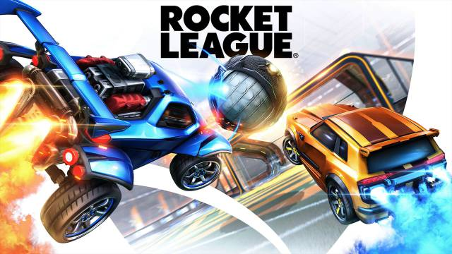
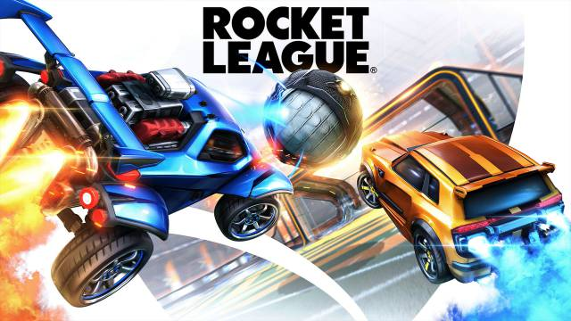

Bernardino José Payeras Molina
¡La informacion sobre MI se encuentra en estas tarjetas!
¡Mas acerca de mi!
Como ya he mencionado antes, tengo 17 años. Nací el 2 de septiembre del 2003 en la ciudad de Guatemala, Guatemala. Son una persona bastante alta, llegando a medir 1.80 m. mis rasgos son; cabello castaño, piel blanca, y mi rasgo más sobresaliente, mis ojos verdes.

Estudiando actualmente...
En este momento de mi vida estoy estudiando 2 carreras. La primera es la carrera de perito en electrónica especializado en computación. Y la segunda es un técnico universitario sobre programación especializado en FullStaks de java y .NET. Ambas carreras las llevo en Centro Educativo Técnico Laboral “Kinal”.
 

Mis videojuegos preferidos profesionalmente
Los videojuegos son las cosas que más me gustan. Me gustan juegos simples como un chess online hasta el juego con los gráficos más realistas. En este momento y profesionalmente hablando, mis videojuegos favoritos son VALORANT, que se encuentra en la categoría de shooter y rocket league, que es un videojuego basado en futbol pero de autos. Son los 2 videojuegos en los que mejor me desenvuelvo y como también mencione antes, espero poder convertirme en un jugador profesional de cada uno de ellos.

Las PC's... ¡Mi aficion favorita!
Desde muy pequeño me llamo la atención el mundo de la tecnología, en especial el mundo de las computadoras de escritorio. He investigado, he experimentado, y he logrado un buen conocimiento con las computadoras. He aprendido a armarlas desde cero, a configurarlas desde cero, a limpiarlas y darle su mantenimiento y/o optimización a cada computadora individualmente. Lastimosamente no me he certificado aun oficialmente como alguien experto en computadoras. Mi próximo deseo a cumplir con el tema de las computadoras es aprender más sobre las refrigeraciones liquidas y los servidores.
Otros datos sobre mi...
Otros datos sobre mí son:
- Se cocinar gran variedad de platos, en especial sobre la carne.
- Me considero un melómano.
- Hago deporte.
- Aficionado a las artes marciales mixtas.
- Toco la guitarra.